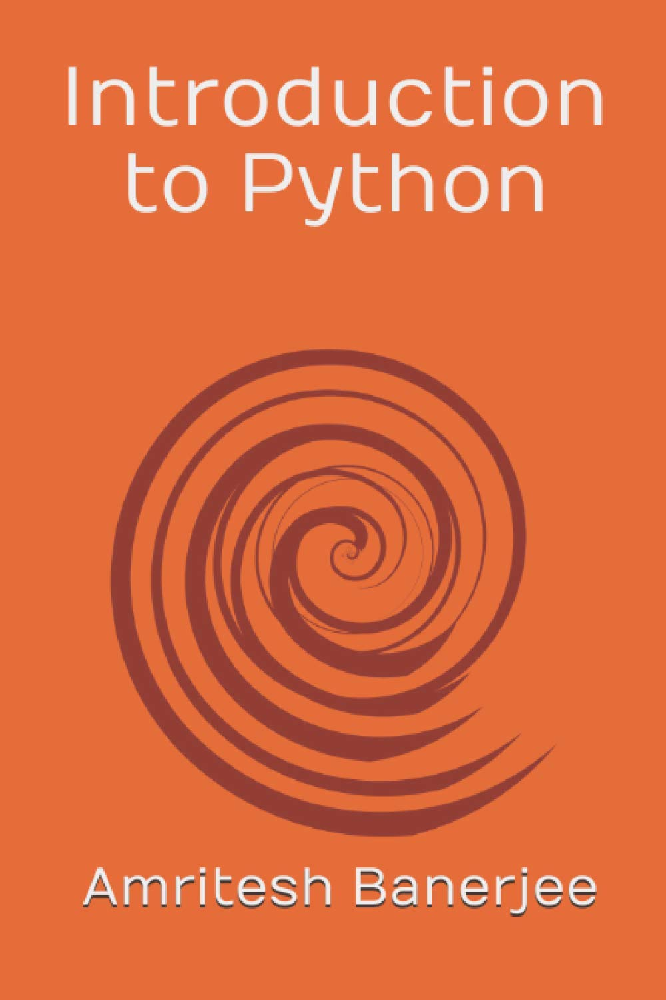

A comprehensive introduction to Python designed to bridge the gap between basic syntax and applied computational problem-solving. Structured to facilitate immediate practical application for new learners.
"Introduction to Python is an essential compendium for any new learner. Written in a simple and effective manner with very clear examples, this book serves as a good stepping-stone for anyone aspiring to quickly develop expertise in Python. Amritesh with his lucid writing style has made an impressive feat to reach out to new learners."
"Introduction to Python Programming is a perfect book for beginners with step by step understanding of the core concepts of the subject. The simple but practical examples enable learners to learn, use and apply the concepts in real time practice. Overall, a wonderful starting point for all school goers out to make big in the world of coding."